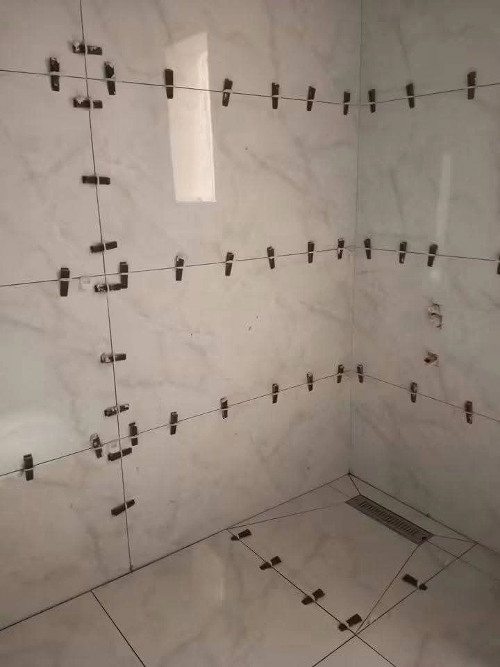
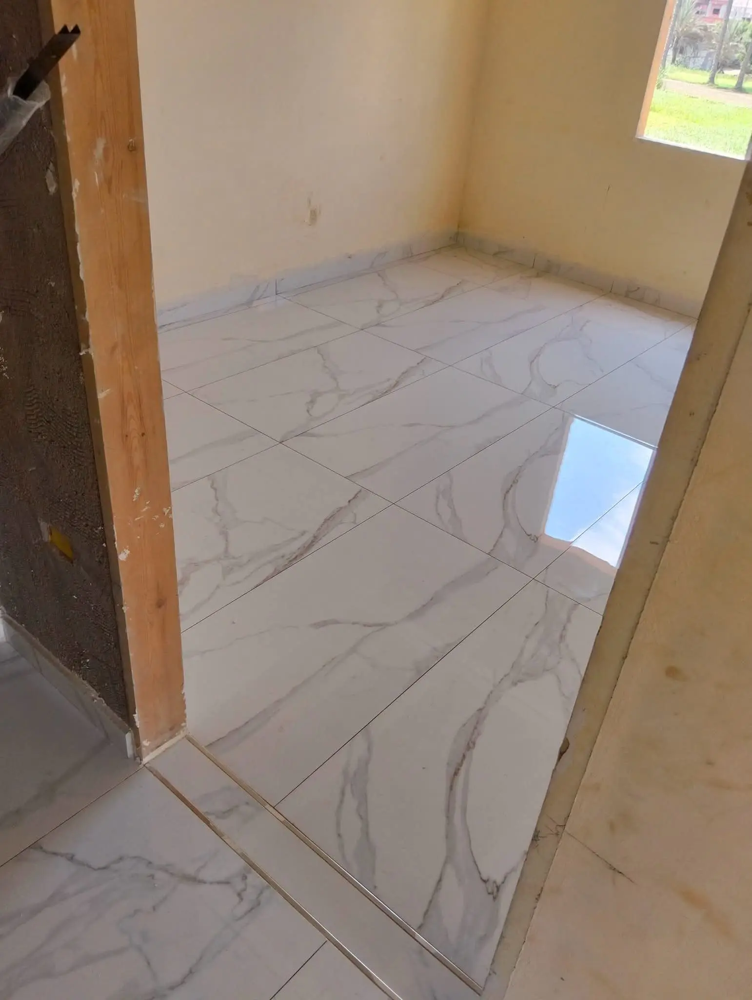
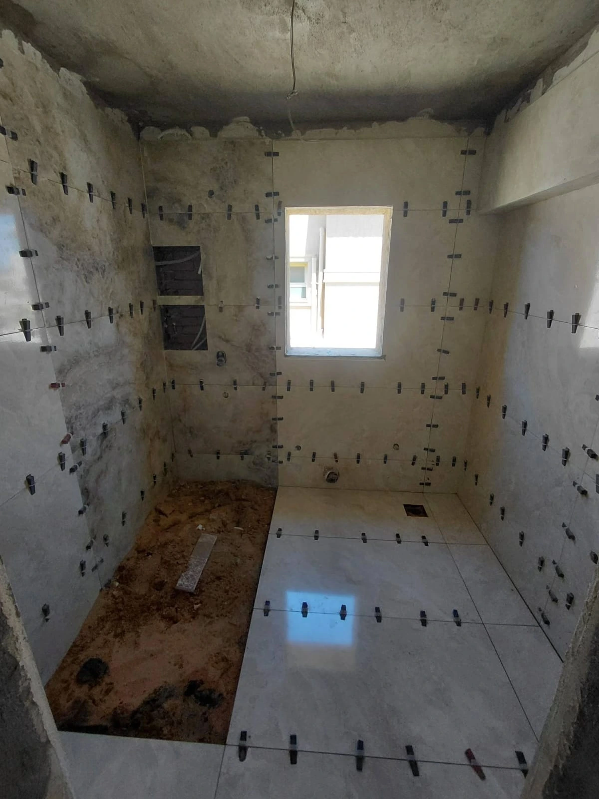
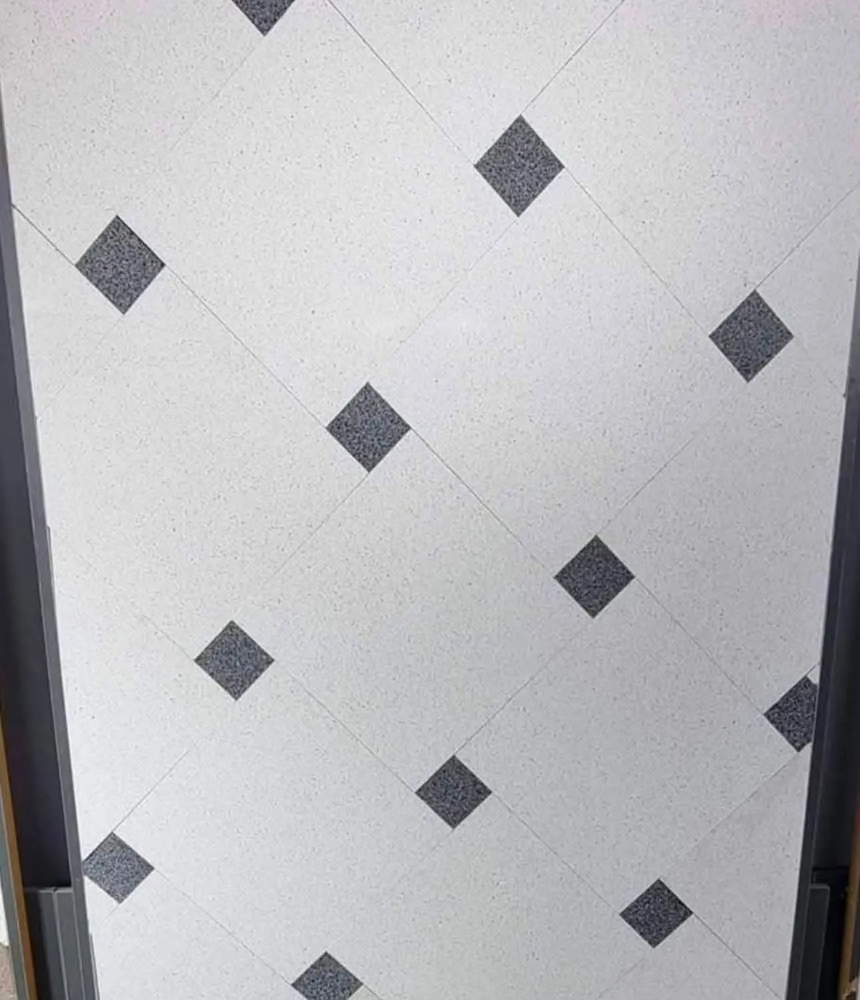

نقدم مجموعة شاملة من خدمات تركيب السيراميك والرخام والموزاييك بأعلى معايير الجودة والاحترافية. فريقنا من الحرفيين المتخصصين يضمن لك نتائج استثنائية تفوق توقعاتك.

يعتبر السيراميك من أكثر مواد التبليط شيوعًا واستخدامًا في المنازل والمباني التجارية نظرًا لمتانته وسهولة صيانته وتنوع تصاميمه. في مؤسسة الإتقان، نتخصص في تركيب جميع أنواع السيراميك بدقة عالية واحترافية تامة، مما يضمن لك نتائج تدوم لسنوات طويلة.
نبدأ عملية التركيب بدراسة المساحة المراد تبليطها وتقييم حالة الأرضية أو الجدار للتأكد من أنها مستوية وجاهزة للتركيب. نستخدم أحدث الأدوات والمعدات لقياس وقص البلاط بدقة متناهية، مما يضمن تطابق القطع بشكل مثالي وعدم وجود فراغات أو عيوب في التركيب.
فريقنا المتخصص يتعامل مع مختلف أنواع السيراميك بما في ذلك السيراميك الإسباني والإيطالي والصيني، ونحن على دراية تامة بخصائص كل نوع ومتطلبات تركيبه الخاصة. نستخدم مواد لاصقة عالية الجودة مناسبة لنوع البلاط والسطح المراد التركيب عليه، مما يضمن ثبات البلاط وعدم تحركه أو تشققه مع مرور الوقت.
بعد التركيب، نقوم بعملية الحشو باستخدام مواد حشو مقاومة للماء والرطوبة ومتوفرة بألوان متعددة لتتناسب مع لون البلاط. كما نحرص على تنظيف البلاط بشكل كامل وإزالة أي بقايا مواد لاصقة أو حشو لنسلمك مشروعًا نظيفًا وجاهزًا للاستخدام مباشرة.
الرخام الطبيعي هو رمز الفخامة والرقي في عالم الديكور الداخلي. كل قطعة رخام هي فريدة من نوعها بعروقها وألوانها الطبيعية، مما يجعل كل مشروع تحفة فنية لا تتكرر. في مؤسسة الإتقان، نتعامل مع أجود أنواع الرخام الطبيعي من مختلف أنحاء العالم، ونوفر خدمة تركيب احترافية تبرز جمال هذه المادة النبيلة.
نتعامل مع مختلف أنواع الرخام بما في ذلك رخام كرارا الإيطالي الأبيض الشهير، الرخام الأسباني بألوانه الدافئة، الرخام التركي المميز، والرخام الهندي والباكستاني بتنوع ألوانه وأسعاره المناسبة. كل نوع من هذه الأنواع له خصائصه الفريدة ومتطلبات عناية خاصة، ونحن نضمن لك التعامل الأمثل مع كل نوع.
عملية تركيب الرخام تتطلب مهارة عالية وخبرة واسعة. نبدأ بفحص قطع الرخام والتأكد من خلوها من العيوب والشروخ، ثم نقوم بعملية التخطيط لتوزيع القطع بطريقة تبرز جمال العروق الطبيعية وتخلق تناسقًا بصريًا رائعًا.
بعد التركيب، نقوم بعملية الجلي والتلميع باستخدام ماكينات احترافية ومواد تلميع خاصة تعيد للرخام بريقه الطبيعي وتحميه من الخدوش والبقع. كما نوفر خدمة المعالجة بمواد عازلة تحمي الرخام من امتصاص السوائل وتسهل عملية التنظيف والصيانة.

الحمامات والمطابخ هي من أكثر المناطق استخدامًا في المنزل وتتطلب اهتمامًا خاصًا في اختيار مواد التبليط وطريقة التركيب. هذه المناطق معرضة للرطوبة العالية والحرارة والاستخدام المتكرر، لذلك يجب أن يكون التبليط فيها قويًا ومقاومًا ومنفذًا بطريقة احترافية تضمن عدم تسرب المياه أو حدوث مشاكل مستقبلية.
في مؤسسة الإتقان، نتخصص في تبليط الحمامات والمطابخ باستخدام مواد عالية الجودة مقاومة للماء والرطوبة. نبدأ بعملية العزل المائي للأرضيات والجدران باستخدام مواد عازلة معتمدة تمنع تسرب المياه إلى الطبقات السفلية.
نوفر مجموعة واسعة من التصاميم والأنماط المناسبة للحمامات والمطابخ، من التصاميم الكلاسيكية الأنيقة إلى الأنماط العصرية المودرن. نساعدك في اختيار البلاط المناسب من حيث الحجم واللون والتشطيب بما يتناسب مع ذوقك ومساحة المكان المتاحة. كما نهتم باختيار البلاط المناسب لأرضية الحمام بحيث يكون مانعًا للانزلاق لضمان السلامة.
بعد التركيب، نستخدم مواد حشو مقاومة للماء والعفن خصيصًا للمناطق الرطبة، ونطبق مواد مانعة للتسرب على الوصلات والزوايا لضمان حماية كاملة.
المساحات الخارجية مثل الساحات والممرات والمداخل والشرفات تحتاج إلى نوع خاص من البلاط يتحمل العوامل الجوية المختلفة من حرارة الشمس وبرودة الشتاء والأمطار والرياح. التبليط الخارجي يتطلب خبرة واختيارًا دقيقًا للمواد المناسبة التي تجمع بين المتانة والجمال.
في مؤسسة الإتقان، نوفر خدمات تبليط خارجي شاملة تشمل الساحات الخارجية، ممرات الحدائق، مواقف السيارات، المداخل الرئيسية، والأسطح. نستخدم بلاطًا خارجيًا عالي الجودة مصممًا خصيصًا لتحمل الظروف الجوية القاسية، مقاومًا للانزلاق لضمان السلامة، ومتوفرًا بتصاميم جذابة تضيف لمسة جمالية لمنزلك.
نبدأ بتجهيز الأرضية بطريقة صحيحة تضمن الصرف الجيد للمياه وعدم تجمعها على السطح. نقوم بعمل ميول مناسبة تسمح للمياه بالتصريف بعيدًا عن المبنى، مما يحمي الأساسات ويمنع تجمع البرك المائية.
نهتم بالتفاصيل الجمالية أيضًا، حيث نوفر تصاميم متنوعة من البلاط الخارجي بألوان وأشكال مختلفة تناسب طراز منزلك. سواء كنت تفضل المظهر الطبيعي للحجر، أو البلاط الخشبي العصري، أو الأشكال الهندسية الحديثة، لدينا ما يناسب ذوقك.


الموزاييك هو فن قديم يعود لآلاف السنين، ولا يزال يستخدم حتى اليوم لإضفاء لمسة فنية فريدة على المساحات الداخلية والخارجية. إذا كنت تبحث عن إضافة عنصر فني مميز إلى منزلك، فإن الموزاييك والأعمال الديكورية هي الخيار المثالي.
في مؤسسة الإتقان، لدينا فريق من الفنانين والحرفيين المتخصصين في تصميم وتنفيذ أعمال الموزاييك والديكورات الفنية. نقدم مجموعة واسعة من الخيارات تشمل الموزاييك الزجاجي الملون، الموزاييك الحجري الطبيعي، الموزاييك السيراميكي، وحتى الموزاييك المعدني للحصول على مظهر عصري وفريد.
يمكن استخدام الموزاييك في العديد من التطبيقات مثل تزيين جدران الحمامات، عمل لوحات فنية في المداخل أو الصالات، تزيين واجهات المطابخ، تصميم أرضيات فنية بأشكال هندسية أو طبيعية، أو حتى تزيين حمامات السباحة والنوافير. كل عمل موزاييك نقوم به هو قطعة فنية فريدة تعكس ذوقك الشخصي.
نعمل معك من مرحلة التصميم الأولى حتى التنفيذ النهائي. يمكننا تنفيذ تصميماتك الخاصة أو تقديم اقتراحات وأفكار إبداعية تناسب المساحة المتاحة والأسلوب الديكوري لمنزلك. سواء كنت تريد تصميمًا تقليديًا بزخارف إسلامية، أو تصميمًا عصريًا بأشكال هندسية مجردة، أو حتى لوحة فنية تجسد منظرًا طبيعيًا، فريقنا قادر على تحويل رؤيتك إلى واقع ملموس.
حتى أفضل أعمال التبليط قد تحتاج إلى صيانة بعد سنوات من الاستخدام. سواء كنت تواجه مشكلة في البلاط المتشقق، الحشو المتآكل، البلاط المتحرك، أو مشاكل تسرب المياه، فإن مؤسسة الإتقان توفر خدمات صيانة وإصلاح شاملة لحل جميع مشاكل التبليط.
نبدأ بفحص شامل لتحديد سبب المشكلة والحل الأنسب. في حالة البلاط المتشقق أو المكسور، نقوم باستبداله ببلاط مطابق أو متناسق مع البلاط الموجود. إذا كانت المشكلة في الحشو المتآكل أو المتغير لونه، نقوم بإزالة الحشو القديم وإعادة الحشو بمواد حديثة مقاومة للماء والعفن.
نوفر أيضًا خدمة جلي وتلميع الرخام والجرانيت لإعادة بريقهما الأصلي. مع مرور الوقت، قد تظهر خدوش سطحية أو يفقد الرخام لمعانه بسبب الاستخدام المستمر. نستخدم ماكينات جلي احترافية ومواد تلميع متخصصة لإعادة السطح إلى حالته الأصلية.
خدمات الصيانة لدينا تشمل أيضًا تنظيف البلاط العميق، إزالة البقع الصعبة، معالجة الرخام بمواد واقية، وإعادة طلاء الحشو بألوان جديدة لتحديث مظهر البلاط دون الحاجة لاستبداله بالكامل.